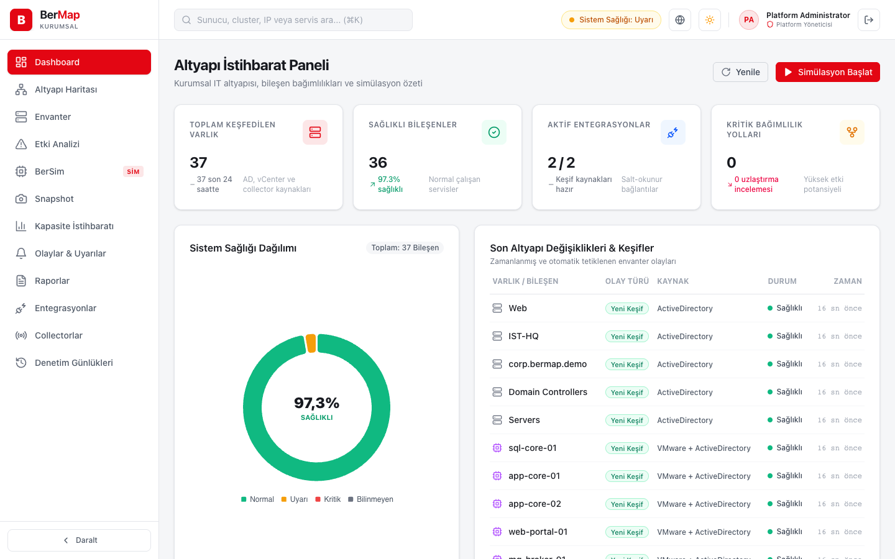
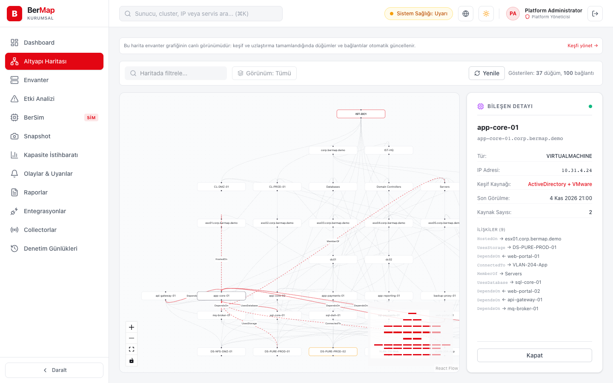
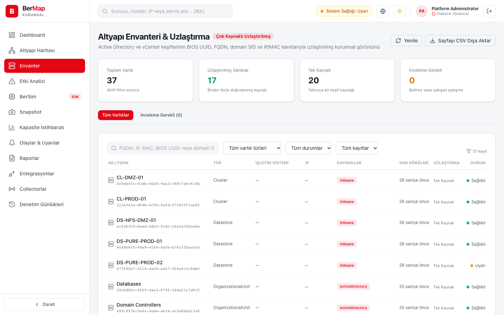
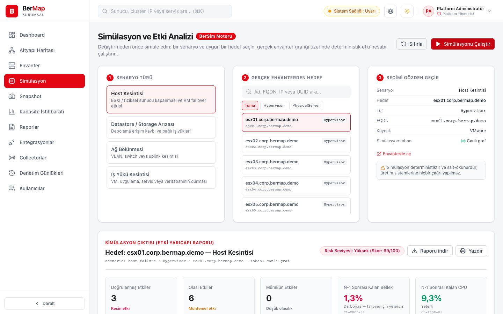
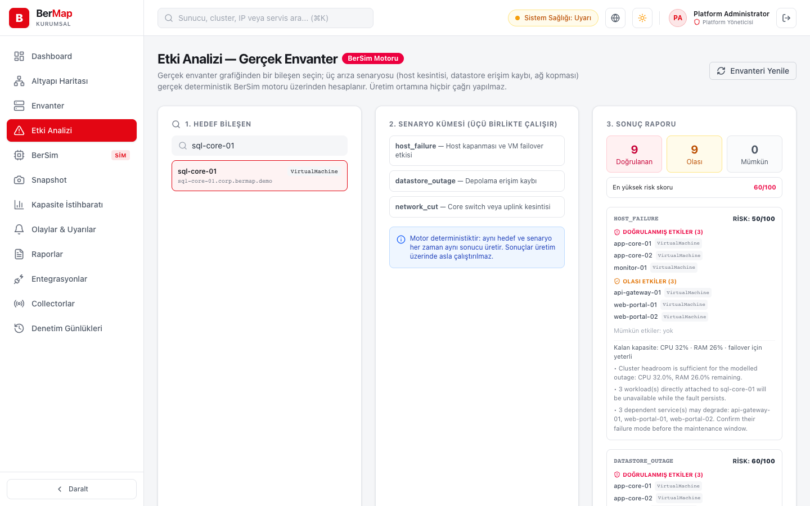
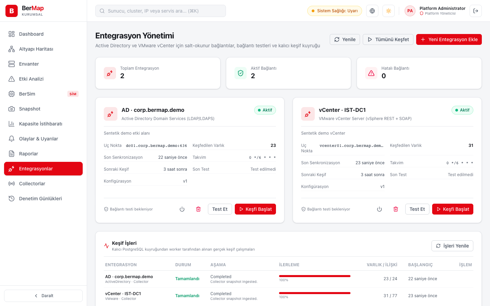

Salt okunur adaptörler
Active Directory (LDAPS, sayfalı arama) ve vCenter (REST + PropertyCollector) cron takvimine göre okunur; kaynak sistemlere hiçbir yazma işlemi yapılmaz. Kimlik bilgileri AES-GCM ile şifreli kasada saklanır.
Sürüm 0.2 · Önizleme · Windows Server ve Linux
BerMap, Active Directory ve vCenter'ı salt okunur keşfeder, sunucuları, sanal makineleri ve bağımlılıkları tek bir grafta uzlaştırır. Bir host çökerse neyin etkileneceğini üretime dokunmadan görürsünüz.

Keşiften simülasyona
Active Directory (LDAPS, sayfalı arama) ve vCenter (REST + PropertyCollector) cron takvimine göre okunur; kaynak sistemlere hiçbir yazma işlemi yapılmaz. Kimlik bilgileri AES-GCM ile şifreli kasada saklanır.
Bir sunucu AD'de bilgisayar, vCenter'da sanal makine olarak görünür. SID, BIOS UUID ve FQDN ile tek düğümde birleşir; yalnız ada dayanan eşleşmeler otomatik birleştirilmez, incelemeye düşer.
Datacenter, cluster, host, VM, datastore, ağ ve uygulama ilişkileri etkileşimli haritada. Eski (stale) kayıtlar silinmez, geçmiş bağlam için işaretlenir.
Bir düğüm seçin; ona bağlı uygulamaları, veritabanlarını ve servisleri derinlik ve güven düzeyiyle görün. Değişiklik toplantısına kanıtla gelin.
Host arızası, datastore kaybı ve ağ bölünmesi senaryoları deterministik motorla hesaplanır; cluster'da failover için CPU ve bellek payı kalıyor mu, risk puanı ne, görürsünüz.
Grafın değişmez, hash'li anlık görüntülerini alın ve karşılaştırın. Giriş, entegrasyon ve keşif işlemlerinin her biri kullanıcı adıyla denetim kaydı bırakır.
Ekranlar
Sağ üstteki düğme bu sayfanın temasını değiştirir; ekran görüntüleri de seçtiğiniz temaya geçer.




Kurum içi mimari
LDAPS 636 / HTTPS 443
Salt okunur servis hesabı
Uzak ağlarda collector
Uzlaştırma · Graf · Simülasyon · Denetim
Yerel hesap ve roller
Harita ve etki analizi
BerSim simülasyonu
Collector yalnız dışarı yönlü bağlantı kurar ve kayıt token'ıyla kimlik doğrular; sunucuya ulaşamadığında verileri yerel kuyrukta tutar. GitHub Pages yalnız bu tanıtım sayfasını sunar; konsol ve envanter verileri GitHub'da çalışmaz.
Kaynaktan kurulum
admin hesabını oluşturur. Parola verilmediyse üretilen parola kasa dizinindeki dosyaya yazılır.
BerMap önizleme sürümündedir: hazır kurulum paketi yoktur; simülasyon her zaman güncel graf üzerinde çalışır. Gerçek AD/vCenter ortamında kabul testi kurumunuzun pilot ortamında yapılmalıdır.